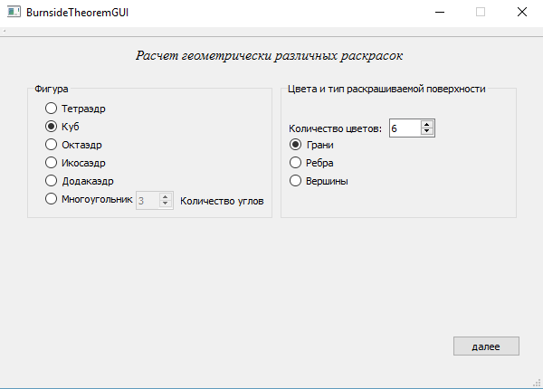
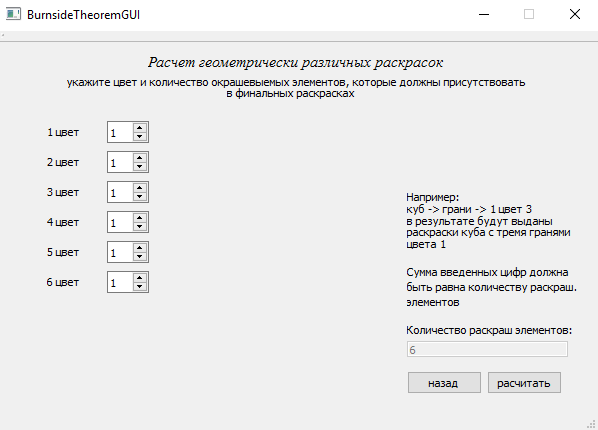
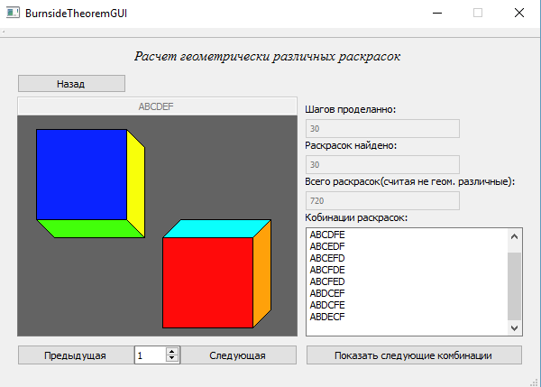
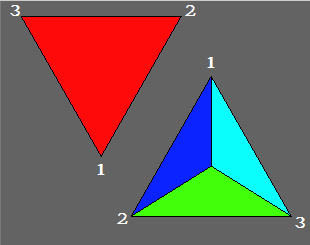
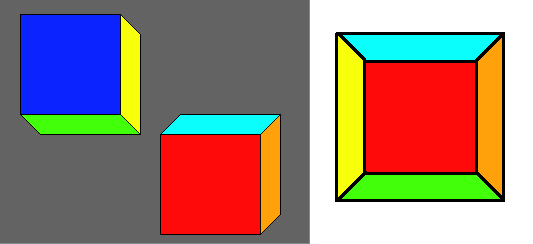
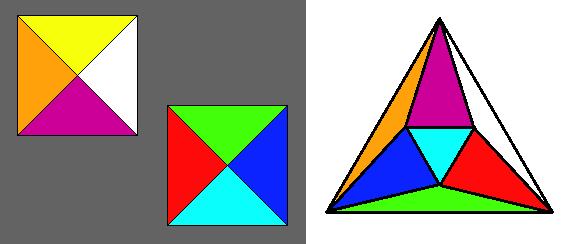
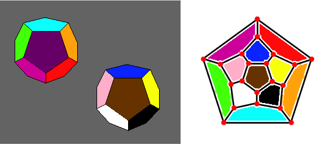
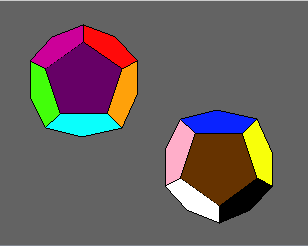

- Операционная система: Windows x64
-
Выбираем фигуру, колличество цветов и тип раскрашиваемой поверхности. Например:
Раскраски граней куба шестью различными цветами.
-
Решаем, сколько граний каком цветом должно быть закрашенно
Внимание! Сумма введенных цифр должна равняться количеству раскрашиваемых элементов.

Узнать их количество всегда можно посмотрев в нижний правый угол интерфейса.
В противном случае программа выведет ошибку и напишет сумму введенных вами цифр/количество раскрашиваемых элементов.В данном случае, мы не можем ничего изменить, жмем далее.
PS Если на начальном этапе вы выбрали количество цветов превышающее количество раскрашиваемых элементов, вы всегда можете вернуться назад и повторить ввод. -
Анализируем резальтаты работы программы
В данном окне можно увидеть раскраски в "буквенном" виде и визуально.

Программа вывела верный результат, количество уникальных раскрасок = 6!/24 (24 размерность группы вращений)Можно вернутся нажав кнопку назад -> возвращаемся к первому пункту
Объяснение полученных рисунков:
Тетраэдр: в принципе ничего сложного, справа вид сверху, слева вид нв нижнюю грань сверху(не снизу).

Цирами показано то, как надо сложить вершины тетраэдра, чтобы получить правильное представлениеКуб: тут сложнее, давайте разберемся
Здесь мы первую проекцию куба как-бы поворачиваем на 180 градусов и подсоединяем ко второму. Раскраска куба на Полиэдральном графе лучшего понимания.

Октаэдр: тут опять же вид сверху и снизуЗдесь мы должны развернуть первую проекцию октаэдра так, чтобы под голубой гранью оказалась фиолетовая, под красной - белая, под синей - оранжевая, под зеленой - желтая

Икосаэдр: из за сложностей в рисовании фигуры, ее изображения нет. Тогда я еще не думал о полиэдральном графе, скорее всего в нем бы все рисунки и представил.
Додекаэдр: слева вид снизу, справа вид сверху.
Сначала нужно развернуть левую проэкцию на 180 градусов

Затем переворачиваем ее и соединяем с правой проекциейТаблица сопоставления цвета и буквы:
A B C D E F G H I J K L M N O P Q R S T U V W X Y Z - Скачать модуль
- Открыть файл ProtocolVisualizer.jar
Вычисление всех геометрически различных раскрасок правильных многогранников/многоугольников с использованием Теоремы Бернсайда
Программа предназначена для визуализации протоколов, основанных на криптосистемах с открытой частью ключа. В программе представлены стандартные протоколы, обсужденные на лекциях.